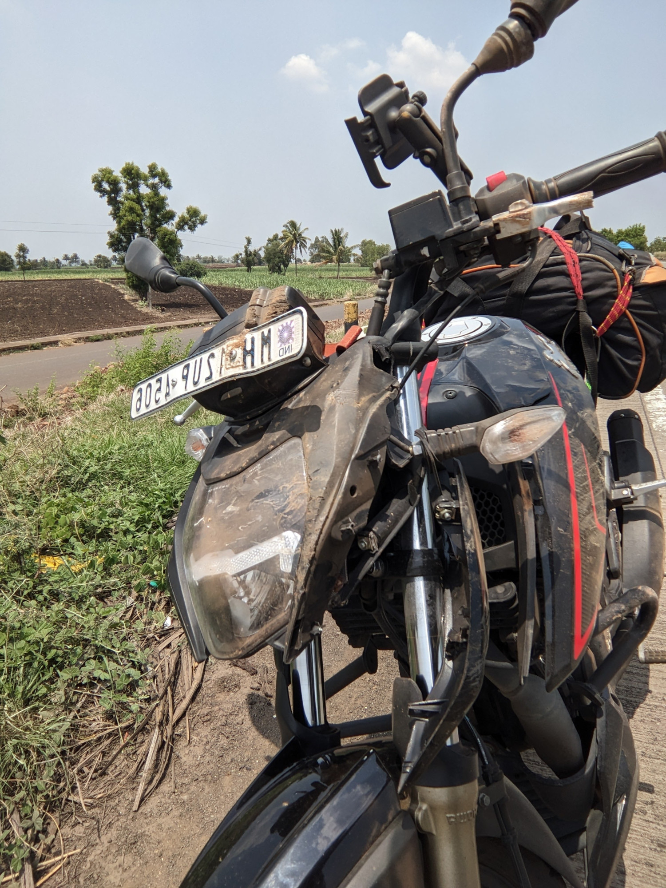
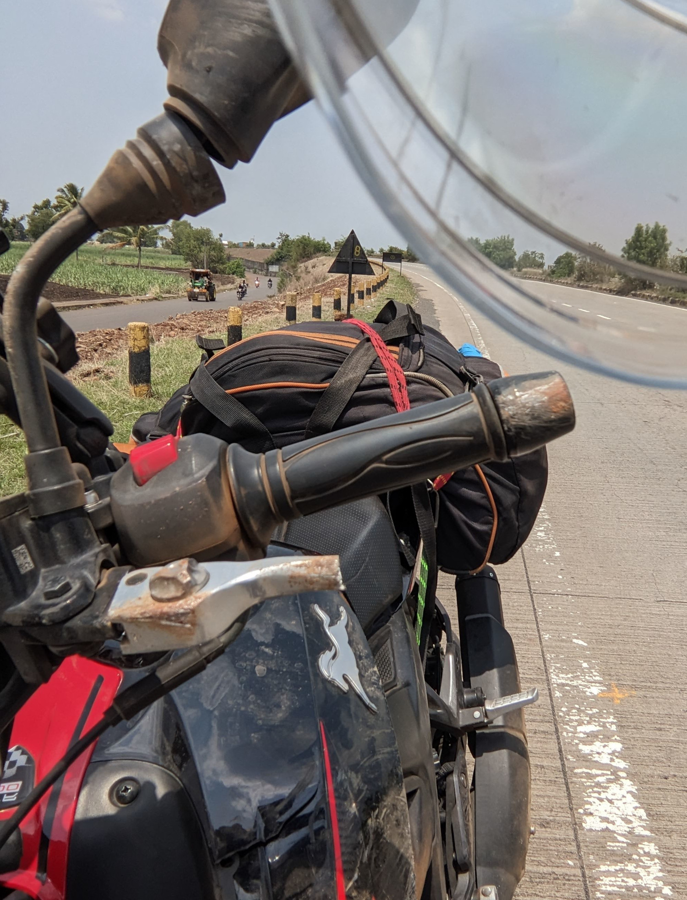
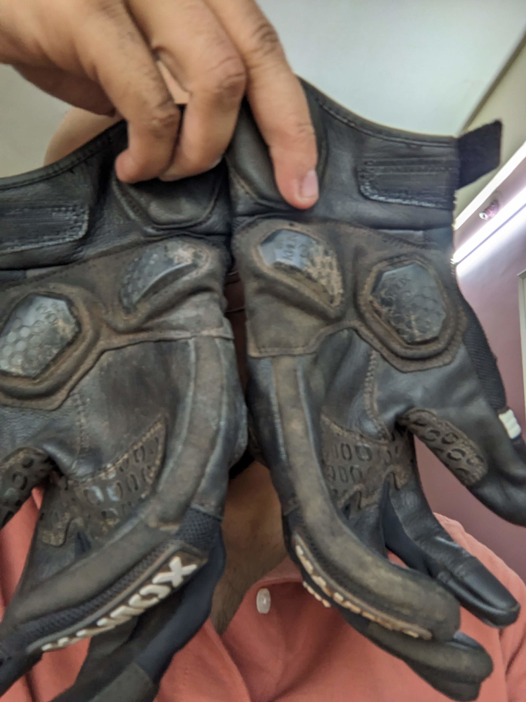
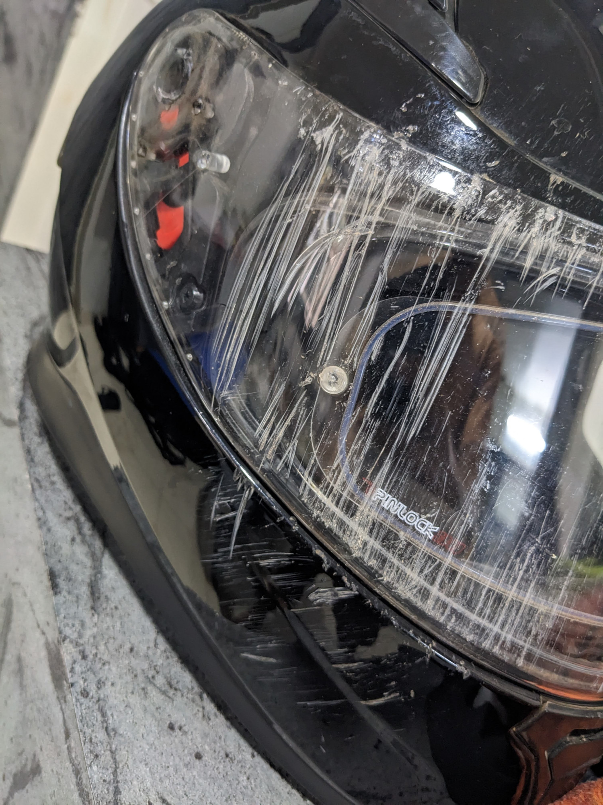

First Motorbike Accident (May 31, 2022)¶
The setup (to the crash)¶
The month before the crash was a very very busy month at work. We had pulled multiple 15 hour days for weeks. This was also the first time I was being on-call for a TSDB. I take my job extra-seriously when the word "database" is involved.
This IPL was extra special because this was my first IPL working at last9.
Moreover, we were running our events-pipeline for the first time during an IPL and I was the only on-call SRE who was involved in this project from day-1. So I had the most context of the system. The other on-call SREs were involved in the metrics-pipeline.
Naturally, when the festivities (IPL) ended, I decided that a good way to spend my days would be to travel to Bengaluru on the bike. A trip to Bengaluru was long overdue. Little did I know that I would not be travelling to Bengaluru anytime soon.
The days before Day-0¶
The last match of IPL 2022 was on 29th May. After the match we spent about ⅔ days cleaning up the system that was scaled to huge proportions to support the load.
I had promised myself, that I would buy a paid of Motorcycling Gloves before my next long trip. What I did not anticipate was that the "next long tour" would happen so soon. So on that Sunday (28th) I went to the Rynox showroom in Viman Nagar and purchased a pair of gloves. That day, I headed to Taminhi Ghat to test out the gloves. Afterall, you never test out a new equipment without familiarising yourself with it first.
The total distance from Pune to Bengaluru is about 844kms. I am not crazy (read: stupid/careless) enough to even attempt this distance without prior practise. So I decided that stopping at Hubballi would be a good decision. I even booked a cheap hotel with covered parking. I like to plan my end-of-day stays as it helps me not think about getting to a town early enough to look for stays. My previous single-day distance record was a little bit over 350kms and the distance from Pune to Hubballi is about 430kms. So not-too-bad overall.
Day-0 and early Day-1¶
The plan was to get done with work early, pack and go to bed early. This was supposed to be the day before the trip and all the books/blogs/YouTube videos of motorbikers say that getting a good night's sleep and proper hydration is crucial. This will be important later on.
As with all plans, things soon went to shit. Work took long. Packing took lesser time. Packing always takes lesser time than allocated.
What was unexpected was that a certain person called me and all logic went out of the window. We spent a good couple hours on the phone talking about random crap like we had done many times before.
Anyway, we said the "goodnight"s and I went off to bed. This was 3AM of day-1. This was my big mistake-1.
Day-1¶
Woke up at 6am. It was a beautiful morning. I made some strong coffee, took a bath and set off. I was on the road by 6:30 AM.
The road towards Bengaluru is beautiful. The road is unblemished and very very smooth. It is a very well-maintained road. One could almost fall asleep on this road. ;) ;)
Sometime during this day, the vibrations on the handlebar of the motorbike finally screwed the optical image stabilisation motors on the mobile phone camera. As a result my camera does not focus anymore. On a Google Pixel 4a, this is a weird set of circumstances.
First signs of trouble.¶
The initial 120 kms were good. No complications. No fatigue.
During this ride, my hands were getting very uncomfortable, so I would ride for a while with my gloves on and then take off my gloves and ride a bit more; before putting them back on again. This cycle put me in a good routine and I was stopping every 90 mins or so. After Satara the fatigue started to kick in.
There were episodes of microsleep. This is something which I had read about before, but failed to recognise them for what they were. I should have turned back now itself. This was mistake-2.
There was once a point where I clearly remember seeing the rear of a truck in front of me. A moment later, I see that the truck is a bit too close to me. I had completely lost the last second of my life. It's as if I had zoomed-in on the back of the truck. This is what a microsleep episode looks like.
I remember stopping at a tea-stall for some tea. I should have turned back then. I did'nt.
I was constantly aware of how tired I was; but I kept going since I had a schedule to stick to. I had promised my friends that I would visit them. I had taken "leaves" from office. I had miles to go before I slept. As we would soon see; the universe has a weird sense of humor.
Anyway, I reached Kolhapur. I put of my golves. I pushed on.
Trouble¶
Barely 60kms out of Kolhapur, there is a slight bend where the highway turns right. I woke up from a microsleep episode and noticed that I was too close to the edge of the road. I did a hard turn even though it was too late.
The front wheel dropped on the dirt (piled along the side of the road) and the bike fell on its right side; hit the highway and slid for some time before coming to a stop.
I remember feeling the helmet hit the ground. I remember seeing the concrete scrape under the visor. I remember feeling my hands slide on the concrete.
Soon, the sliding stopped. I got up and did some damage assessment.
The aftermath¶
- I was not bleeding severely. There were a number of scratches here and there.
- My arms were also not broken. This was a major relief. My arms were hurt. Wrists were twisted and the fingers were badly hurt. I couldn't move them properly.
- I was barefoot as both of my shoes were removed in this ordeal. I even lost the right sock was it sustained too many damages.
- My legs were hurt. The bike landed on the left lower-leg. It hurt like hell.
- My bag was flung off and slid on the ground for a while. Some parts of the bag were completely rubbed into the ground.
- The bike lost its right foot-peg and half of its right brake lever. The forks were twisted.
- The entire front section of the bike; i.e. the headlight assembly, the indicators, the tank-cover, the right-side crash guard, the silencer pipe cover etc were damaged.
- My gloves were intact, but they did take a beating. Fortunately, none of my skin was lost to the ground.
- My helmet has bad scratches, but same here, my face and neck were unhurt.
- The Denim Jacket I was wearing performed nicely too.
- The decathlon pant that I use for motorcycling also didn't tear as it was sliding on the highway. Although there is a small hole in the pant.
By this time some people gathered nearby and were busy collecting my stuff which was strewn all over the road by this point. I couldn't help feeling bad that I was bothering these people for no good reason. Now how fucked do you have to be in the head to think this while you are standing barefoot on a highway after getting dropped from a bike going at 70kmph. Anyway.
With the help of a couple of these folks, I managed to pick up the bike and start it. Fortunately it started up. I was back in action.
I drank a lot of water and washed my face with some of it. Then some of the locals urged me to take the bike to a garage and get the bike checked out. I complied. The mechanic at the garage told me that the bike was OK and in perfect drive-able condition. So, I decided that the best course of action for me was to head to the largest town nearby (which was Kolhapur) and to stay there for a day and to get myself checked out at a doctors.
Kolhapur was 60kms in the other direction. So off I went. Halfway on my way to Kolhapur I realised that I didn't know where the accident occurred and more importantly, i did not have pictures of the accident site. So i stopped the bike and took some pics. It was also from here that I called my brother and told him what had happened.
In Kolhapur¶
Finding a place to stay at Kolhapur was easy. By the time I got into the parking of the hotel, it was drizzling.
I rested in the hotel for a bit before stepping out. There was a medical-store nearby with a doctor's chamber attached. I went there and got a tetanus shot. The doctor also did a series of basic checks to rule out anything major and sent me away. There was nothing seriously wrong with me which was caused by the accident.
I had some difficulty walking; so I went for a walk and explored the road nearby. I wanted to see how badly was I hurt. I came back and called my friends. Almost everyone suggested that I arrange a truck to carry the bike and myself back home. I said I would.
That evening, unexpectedly I had severe diarrhoea. Apparently trauma makes the digestive system go wonky. Additionally my left leg started hurting a LOT more than it previously did.
Fortunately, I always carry a decent medical kit. I had a bunch of ORS sachets and a compressive-bandage.
I was super tired and ready to fall asleep. I was also extremely hungry. I ordered some food but ended up not eating all of it. I didn't have the appetite for it. I decided that i would much rather sleep and wake up the next day. So, I put on the bandage, put my leg on a set of pillows and drank a lot of ORS and went to sleep.
I had to use the bathroom in the middle of night multiple times, but by morning I was almost OK. The swelling in the left leg was much lesser. It almost didn't hurt to move my fingers anymore.
The return¶
I lied to my friends about taking a truck. I wanted to drive the bike back. So I did. The only person who knew about this trip was my brother.
This time, armed with the humbling knowledge of fatigue I stopped the bike every 55 mins and drank water / ate something. I also called my brother for a "heartbeat" report everytime I did.
During one of these stops, a friend called and I lied to them too about being on a truck. If you are reading this, I am sorry.
I even stopped at a place to have some Falooda. One person was watering the plants outside his shop. I asked him to kindly spray me with water and he did. It was a relief on a day and hot day.
I got home at about 3 pm that evening. The ride back home was largely uneventful. I didnt even miss the broken foot-peg and the broken brake-lever.
Some photos¶
Do note that my phone camera had stopped focusing by this time. So most of the photos are selfies. :p

In this photo we can see that the headlight assembly is damaged. The speedometer console is also damaged. The entire right side of the vehicle took heavy damage. Note the broken brake-lever. It was still effective though.

The damage on the handlebars is more clearly visible here. You also also see the bag that was dragged and the right foot-peg which is missing.

These are the Rynox Urban X gloves. They are phenomenal. In the photo you can see that the palm sliders did their job perfectly. I shudder to think what would have happened if I was not wearing these gloves. Im sure bone would have been exposed. Maybe more.

This is the helmet. As we can all see, there is considerably scratches. I decided not the replace the helmet because it didnt really hit the ground; instead it slid on it. Maybe I should replace this. Again, If i didn't have this on, something worse would have happened entirely.
Lesson learnt ?¶
My friends know that I like to joke about death and accidents a lot. I find it funny.
This was the first time I was really scared. This accident actually made death seem very real to me. I always knew about the risks involved, but I also assumed that I would not get into a fatal accident. This could have been one.
I clearly remember getting up after the crash and thinking that I had so many more things to do. I am acutely aware that whatever happened could have gone in a really bad direction. Motorcycles are not to be taken un-seriously. I have made that mistake.
In light of these events, I have started to take some aspects of life a bit more seriously.
I have also decided that I will let my plans go fuck themselves if my body says otherwise. Pushing your fatigued body beyond a certain point is foolish. If your body is telling you something, you should listen to it.
Let's face it, this was completely avoidable and I can not blame anyone but myself. I should have slept well that night. I should have started later that morning, since I had not slept well.
I should have turned back the moment I felt tired and I still had 200 kms to go. I didn't. This was extremely irresponsible and careless of me. I should have known better.
As one friend put it, I am not an island and whatever I do has repercussions around the people in my life. I should treat myself and them with more respect.
Finally, I have a sense of urgency now. I've got a lof of things to do and I think I should get at them. If i wait around for the "right time", I might never do them. :)
Thanks for reading and ride safe.